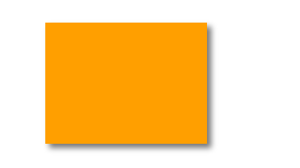

图像阴影¶
定义和用法 shadowColor 属性设置或返回用于阴影的颜色。
注释：请将 shadowColor 属性与 shadowBlur 属性一起使用，来创建阴影。 提示：请通过使用 shadowOffsetX 和 shadowOffsetY 属性来调节阴影效果。
ctx.shadowColor=color;
color 用于阴影的 CSS 颜色值。默认值是 #000000。
ctx.shadowBlur=number; number 阴影的模糊级数
ctx.shadowOffsetX=number; number 正值或负值，定义阴影与形状的水平距离。
ctx.shadowOffsetY=number; number 正值或负值，定义阴影与形状的垂直距离。
ctx.shadowColor = 'black';
ctx.shadowBlur = 10;
ctx.shadowOffsetX = 5;
ctx.shadowOffsetY = 5;
rectangle(100, 100, 200, 150);
